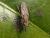

pherbellia

Definition: Pherbellia is a genus of flies in the family Sciomyzidae, the marsh flies or snail-killing flies. They occur throughout the world, except for the Subantarctic region.Like many Sciomyzidae, species of this genus have larvae that are predators or parasitoids of snails. The larva of P. albovaria, for example, eats land snails such as Anguispira alternata and A. fergusoni, and then pupates in the empty shell. The P. albocostata larva eats up to five snails and then pupates in the ground litter next to the last empty shell. The larva of P. inflexa attacks the glass snail Zonitoides arboreus.P. punctata is a parasitoid on the amber snail Succinea putris. P. anubis larvae feed on several types of freshwater snails along the edges of ponds and marshes. Several Pherbellia are predators of the pond snail Stagnicola palustris. While most snail-killing flies target land and freshwater pulmonate snails, P. prefixa preys on the mossy valvata (Valvata sincera), which is an operculate snail in the valve snail family.As of 2012 there were about 95 species in the genus.
Source: Wikipedia
Wikipedia Page (Something wrong with this association? Let us know.)
Wikidata Page (Something wrong with this association? Let us know.)